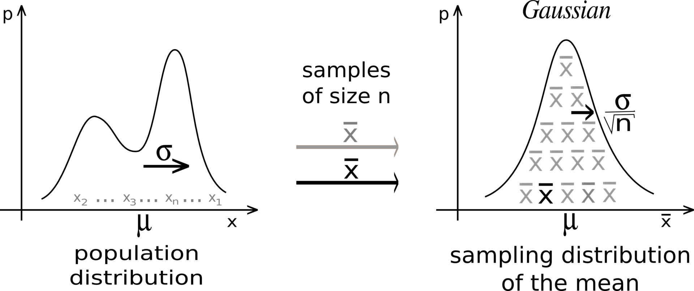
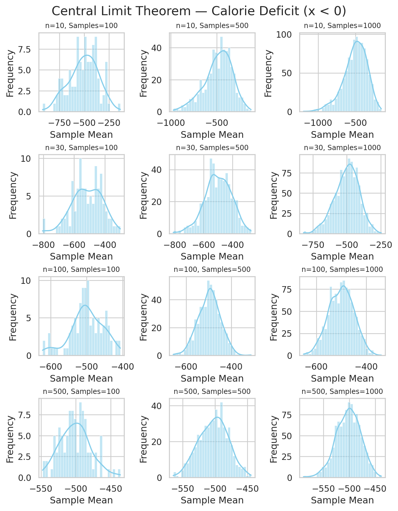
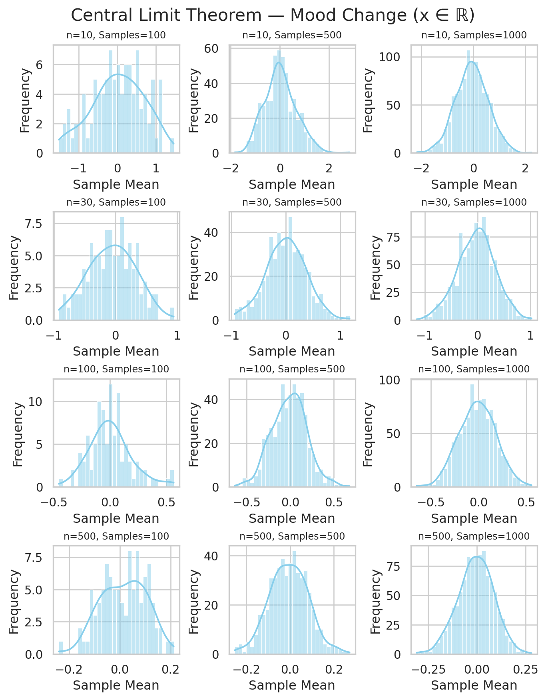

Central Limit Theorem
The Central Limit Theorem is like the statistical safety net — it tells us that averages “behave predictably,” which allows us to make reliable decisions from limited data.
1 Why?
It explains why the normal distribution is everywhere
Even if the underlying data is not normally distributed, the CLT tells us that the distribution of the sample mean (average of a large number of observations) tends to be normal as the sample size increases.
Allow to make predictions about populations through sample
Often, we cannot measure the entire population (it’s too big, too expensive, or impossible). CLT allows us to use a sample to estimate population parameters, like the mean or proportion, with a known level of certainty. Even though we only survey a small portion of voters, CLT ensures that the average vote proportion in our sample approximates the population proportion.
Confidence intervals and hypothesis testing
Due to existance of CLT, any statistical methods assume normality of the sampling distribution. Then it helps to calculate confidence intervals for the population mean (t-tests and z-tests).
Helps in risk management and business decisions
CLT is used in finance, insurance, quality control, and more. It allows decision-makers to:
- Estimate average returns or losses.
- Predict product defects or service times.
- Assess risk probabilities in complex systems.Simplifies complex problems
Instead of dealing with the messy, unknown distribution of the data, CLT says: “Just take a big enough sample, and its average behaves nicely — like a normal distribution.” This is why simulation techniques, like Monte Carlo simulations, rely on CLT.
2 What?
Let {X_1, X_2, ..., X_n} be a sequence of IID random variables having a distribution with expected value given by \mu and finite variance \sigma^2, then sample mean \bar{X_n}=\frac{x_1+x_2+....+x_n}{n} converges almost surely to the expected value \mu as n \rightarrow \infty.
Lets breaks it in chunks:
We are interested in behavior of averages, i.e., the sampling distribution of the random variable \bar{X}_n.
The Central Limit Theorem states that, regardless of the distribution of X_i, as n becomes large, the distribution of the sample mean \bar{X}_n approaches a normal distribution:
\bar{X}_n \ \overset{d}{\longrightarrow} \ \mathcal{N}\Big(\mu, \frac{\sigma^2}{n}\Big), \quad \text{as } n \to \infty
where \sigma^2/n is the variance of the sample mean, showing that larger samples reduce variability.
- This explains why averaging smooths out randomness: even if individual measurements are skewed, extreme, or noisy, the sample mean becomes predictable for large n.

3 How?
Lets understand with three examples,
Two inputs to remember:
- Sample size (number of data points per sample)
- Number of samples (number of sample means to compute)
3.1 Sampling Distribution of Average Calorie Deficit
Let Y be a random variable representing daily net calorie deficit, where
negative values indicate burning more calories than consumed.
Suppose we have independent and identically distributed samples
Y_1, Y_2, \dots, Y_n from this distribution, with:
- Expected value (mean): \mu = \mathbb{E}[Y]
- Variance: \sigma^2 = \mathrm{Var}(Y)
We are interested in the distribution of the sample mean:
\bar{Y}_n = \frac{1}{n}\sum_{i=1}^n Y_i
Even though each Y_i can only take negative values (support (-\infty, 0)),
the Central Limit Theorem ensures that, for large n,
\frac{\bar{Y}_n - \mu}{\sigma / \sqrt{n}} \ \overset{d}{\longrightarrow}\ \mathcal{N}(0,1),
or equivalently,
\bar{Y}_n \ \overset{d}{\approx}\ \mathcal{N}\!\left(\mu,\ \frac{\sigma^2}{n}\right).
Imagine we are tracking people’s daily calorie balance over several months. Each day, a person either burns more calories than they consume (negative value) or consumes more than they burn (positive value).
We want to understand how the average daily calorie deficit behaves over time.
Sample Size (n) – How many days we consider at once: Think of sample_size = 500 as looking at 500 consecutive days from our dataset. For each 500-day block, we calculate the average daily calorie deficit. This average smooths out the ups and downs of individual days — sometimes a person might eat a lot or exercise more, but over 500 days, those extreme days have less effect.
Number of Samples – How many 500-day blocks we take: Suppose we take 1000 such blocks (with random days chosen from the full dataset). Each block gives us one average. After collecting all 1000 averages, we can see the distribution of these averages. This shows how typical daily calorie deficits fluctuate when looking at 500-day periods.
Suppose we have a long series of daily calorie deficits:
Y = [y_1, y_2, y_3, \dots, y_{1500}]
We want to create samples of size n = 500 and compute 1000 sample means. Conceptually, the samples can be represented as a matrix:
\begin{bmatrix} y_1 & y_2 & \dots & y_{500} \\ y_2 & y_3 & \dots & y_{501} \\ \vdots & \vdots & \ddots & \vdots \\ y_{1001} & y_{1002} & \dots & y_{1500} \\ \end{bmatrix}
- Each row represents one sample of size 500 (a block of consecutive days).
- Each row’s mean is one sample mean that we use in our histogram.
- Sliding the window by 1 day (or sampling randomly with replacement) gives multiple rows, so we can compute number of samples = 1000.
This is exactly what the Central Limit Theorem simulation does: it collects many averages of size n, and plotting them produces a bell-shaped sampling distribution of the mean, even if the original daily data are skewed.
Putting it together:
Each sample (500 days) gives us one data point in the histogram — the average deficit for that block.
The histogram of 1000 sample averages shows the sampling distribution of the mean.
According to the Central Limit Theorem, even though daily calorie deficits are highly skewed (mostly negative), the distribution of averages looks bell-shaped when the sample size is large enough.
Code
# --- Define datasets ---
datasets = {
"Calorie Deficit (x < 0)": -np.random.exponential(scale=500, size=10000)
}
# --- Define sample sizes and number of samples ---
sample_sizes = [10, 30, 100, 500]
num_samples_list = [100, 500, 1000]
# --- Loop over each dataset and make a grid of plots ---
for dataset_name, data in datasets.items():
fig, axes = plt.subplots(
nrows=len(sample_sizes),
ncols=len(num_samples_list),
figsize=(7, 9),
constrained_layout=True
)
for i, sample_size in enumerate(sample_sizes):
for j, num_samples in enumerate(num_samples_list):
ax = axes[i, j]
# Compute sample means
sample_means = [np.mean(np.random.choice(data, sample_size)) for _ in range(num_samples)]
# Plot histogram of sample means
sns.histplot(sample_means, bins=30, kde=True, color="skyblue", ax=ax)
ax.set_title(f"n={sample_size}, Samples={num_samples}", fontsize=9)
ax.set_xlabel("Sample Mean")
ax.set_ylabel("Frequency")
# Overall title for the grid
fig.suptitle(f"Central Limit Theorem — {dataset_name}", fontsize=16)
plt.show()
- The distribution of \bar{Y}_n becomes bell-shaped, even if the original data are skewed or bounded below zero.
- As n grows, the spread (variance) of \bar{Y}_n decreases: \mathrm{Var}(\bar{Y}_n) = \frac{\sigma^2}{n}.
- This shows how averaging smooths out randomness:
individual days fluctuate, but long-term averages become predictable.
3.3 Sampling Distribution of Average Mood Change
Unflod the code and DIY
Code
# --- Define datasets ---
datasets = {
"Mood Change (x ∈ ℝ)": np.random.normal(loc=0, scale=2, size=10000)
}
# --- Define sample sizes and number of samples ---
sample_sizes = [10, 30, 100, 500]
num_samples_list = [100, 500, 1000]
# --- Loop over each dataset and make a grid of plots ---
for dataset_name, data in datasets.items():
fig, axes = plt.subplots(
nrows=len(sample_sizes),
ncols=len(num_samples_list),
figsize=(7, 9),
constrained_layout=True
)
for i, sample_size in enumerate(sample_sizes):
for j, num_samples in enumerate(num_samples_list):
ax = axes[i, j]
# Compute sample means
sample_means = [np.mean(np.random.choice(data, sample_size)) for _ in range(num_samples)]
# Plot histogram of sample means
sns.histplot(sample_means, bins=30, kde=True, color="skyblue", ax=ax)
ax.set_title(f"n={sample_size}, Samples={num_samples}", fontsize=9)
ax.set_xlabel("Sample Mean")
ax.set_ylabel("Frequency")
# Overall title for the grid
fig.suptitle(f"Central Limit Theorem — {dataset_name}", fontsize=16)
plt.show()